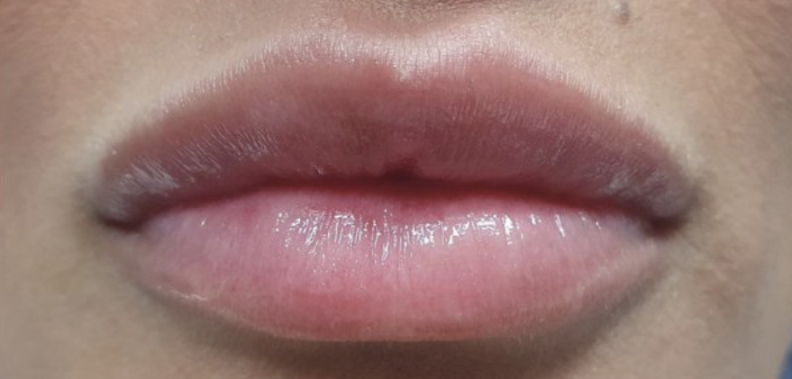
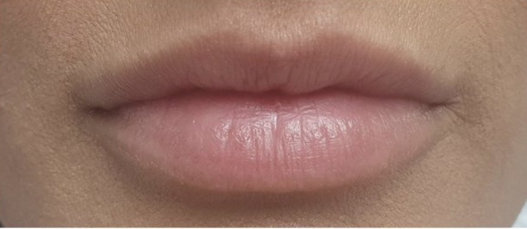

Odontoiatria
Medicina Estetica
Ogni trattamento è studiato per valorizzare la tua bellezza naturale con tecniche all'avanguardia e risultati duraturi.
Il filler labbra è un trattamento di medicina estetica indicato per aumentare il volume, migliorare la forma e correggere eventuali asimmetrie. Viene eseguito mediante l'utilizzo di acido ialuronico, una sostanza biocompatibile che consente di ottenere un risultato naturale e armonioso. Il trattamento è rapido, minimamente invasivo e personalizzato in base alle caratteristiche del viso.

Dopo
Prima← trascina per confrontare →
Benefici principali
Bozza da completare con i dati reali dello studio.
Studio Dentistico Sorce-Pantaleo (Dental Arts Studio) — Via Pastrengo 2, Mussomeli (CL). P.IVA [DA COMPLETARE].
I dati forniti sono trattati per rispondere alle richieste, gestire gli appuntamenti e fornire le prestazioni sanitarie.
Puoi richiedere accesso, rettifica e cancellazione scrivendo a [EMAIL DA COMPLETARE] o allo 0934 991544.